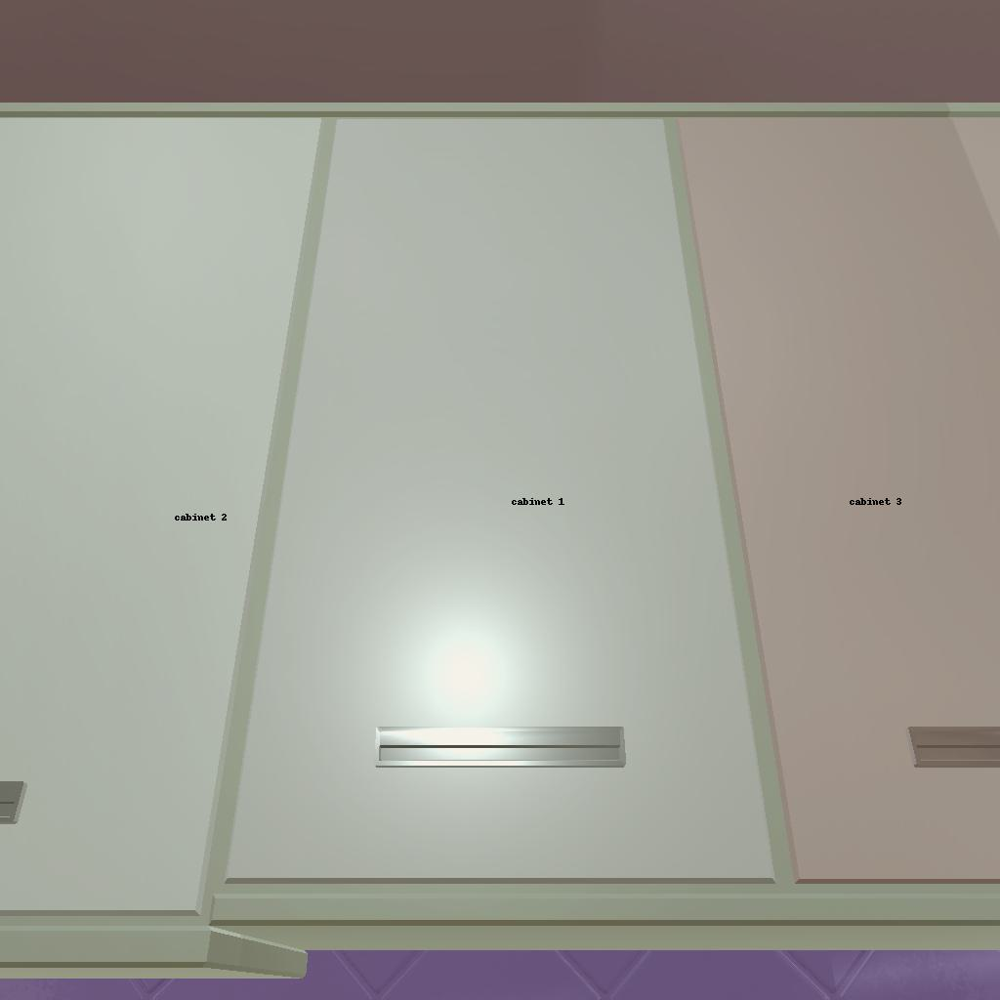

---------------------------------------------------------task: 21---------------------------------------------------------
--------------------------------------------------------------------------------------------------------------------------------------------------------------------
--------------------------------------------------------------------------------------------------------------------------------------------------------------------
Step:--------------------------------------------------------------------------7-------------------------------------------------------------------------------
----------------------------------------
VLM Prompt:
Image1:
Image2:
**Instruction**
1. Analyze the provided image to identify all visible household objects, focusing on those relevant to the task description "put a hot cup in countertop."
2. Use the analysis of the image and the task hint "The agent must find an object of the desired type, pick it up, go to a microwave, heat the object with the microwave, then find the correct location to place it, and put it down there. The agent does not need to use the microwave button or open the microwave to heat the object, and the agent just needs to do action that is "heat the object with the microwave"." to answer the question: what is the most reasonable action in the choices for the task description "put a hot cup in countertop"?
4. Decide and write the answer using the template: The answer is: (i): , where i is the real number. If there is no desired object in the image, search every place based on **Initial Observation** to find the object. And if no one is exactly correct, choose a similar answer.
**Initial Observation**
You are in the middle of a room. Looking quickly around you, you can see cabinet (1-6), microwave (1), countertop (1-2), coffeemachine (1), toaster (1), sink (1), sinkbasin (1), fridge (1)
**Answer Choices**
(1): go to microwave 1
(2): go to cabinet 4
(3): go to cabinet 5
(4): go to cabinet 6
(5): go to countertop 1
(6): go to coffeemachine 1
(7): go to toaster 1
(8): go to countertop 2
(9): go to sink 1
(10): go to sinkbasin 1
(11): go to fridge 1
(12): open cabinet 3
(13): close cabinet 3
(14): examine cabinet 3
**Answer**
Let's think step by step by following the instructions.
----------------------------------------
----------------------------------------
Original Response:
The task is to put a hot cup on the countertop. To achieve this, we need to find a cup, heat it in the microwave, and then place it on the countertop.
From the initial observation, we know there is a microwave (1), countertop (1-2), and cabinets (1-6) available. Since the task does not require using the microwave button or opening the microwave, we can skip those actions.
Based on the images provided, we can see three labeled cabinets (cabinet 1, cabinet 2, and cabinet 3). We do not see any cups in the visible cabinets, so we need to search for the cup elsewhere.
Since cabinets are typically where cups are stored, the most reasonable action would be to search inside the cabinets that are not visible in the images provided. Therefore, we should go to one of the cabinets that we have not seen inside yet, which would be cabinet 4, cabinet 5, or cabinet 6.
The answer is: (2): go to cabinet 4
----------------------------------------
----------------------------------------
>>> Refine Original VLM Response and Get Pure Action: go to cabinet 4
----------------------------------------
-----------------------------------------------------------------
Running time: 9.97502851486206 seconds
Total Money: 10.260100000000007
-----------------------------------------------------------------
-----------------------------------------------------------------
Text Observation:You arrive at loc 4. The cabinet 4 is open. On the cabinet 4, you see a saltshaker 1.
-----------------------------------------------------------------
UNSUCCEED